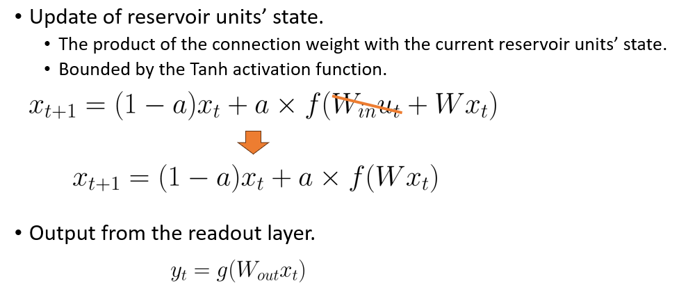
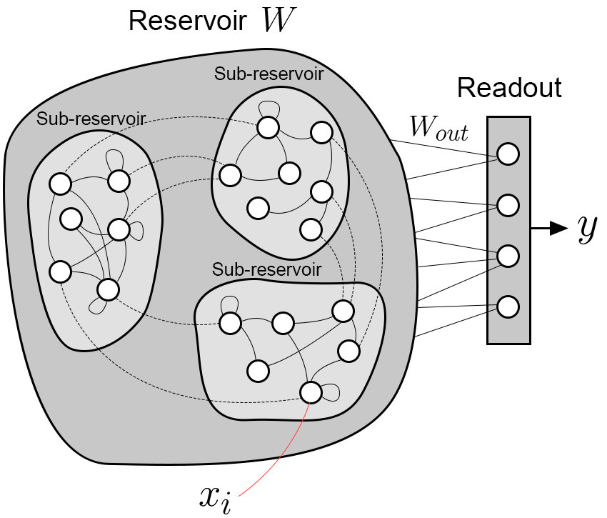
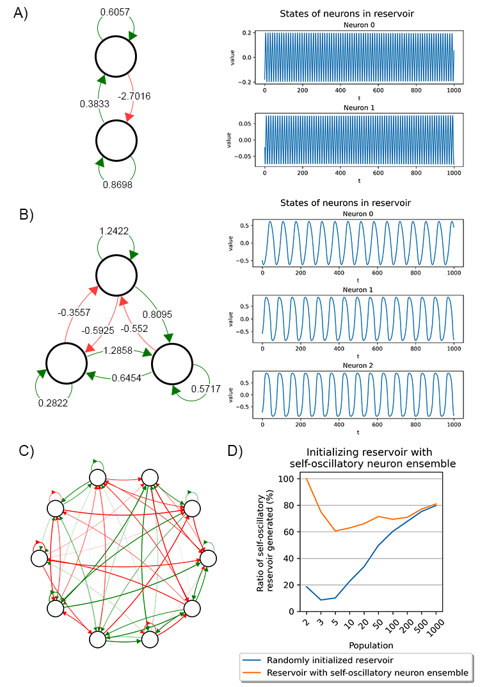
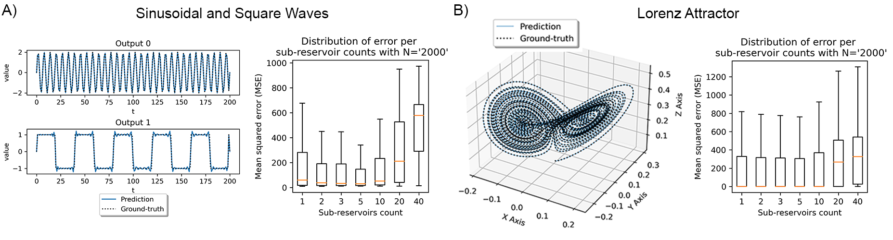
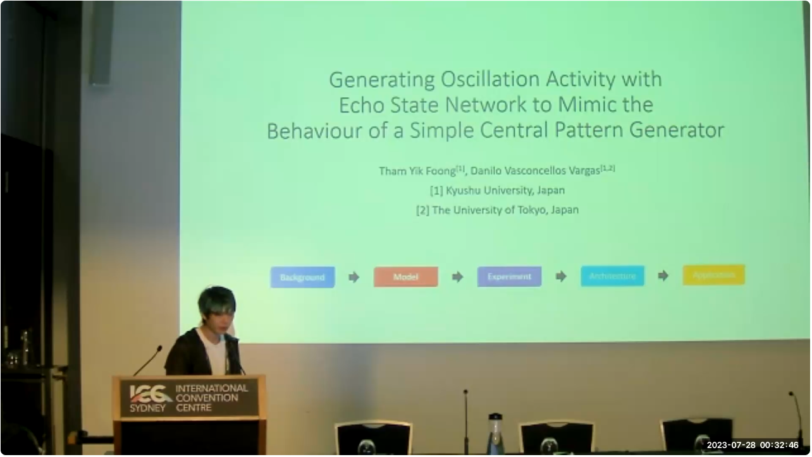

I remember two years ago my supervisor showed me a video of a decerebrated cat walking on a treadmill (I liked to think of it as a 'zombie cat'). What's more creepy, when the treadmill's speed increased, the cat can adjust its gait to match the speed of the treadmill. The whole experiment might sound eerie and inhumane, but what is the science behind this spontaneous and adaptive behavior? It turns out, the movement is regulated by what is called a central pattern generator (CPG) in the cat's spinal cord. A CPG is a collection of neural circuits that control periodic movement without any external input; feedback merely aids in adaptation, like gait transition. Such generators are pervasive in the system of animals, including humans. CPGs are responsible for various functions like heartbeat, movement, flying, swimming, and much more. I find this topic intriguing because understanding it could pave the way for advanced robotic development by mimicking these natural systems.
Fast forward to one and a half year later, when I was playing around with the echo state network, I realized that the reservoir (a network with random connections where the weight matrix follows specific settings) could occasionally produce spontaneous and self-sustaining oscillations without any input. This behavior was reminiscent of the central pattern generator, leading me to speculate that perhaps reservoirs could be used to simulate central pattern generators.
Therefore, I began analyzing the behavior and exploring ways to enhance the probability of the reservoir producing oscillations. Initially, I modified the reservoir state update equation by eliminating the input layer, while keeping the output equation unchanged.
 The state update and output equation of SO-ESN. It is JUST the same as the original ESN but without the input layer.Next, I delved into tweaking various parameters, such as the leaking rate, spectral radius (these are the hyperparameters for Echo State Network, I recommend checking out Echo State Network first if you haven’t, here is a great paper about it), neuron population, and different methods for initializing the reservoir weight matrix, to observe their impact on oscillation. The reservoir's connectivity comprised multiple sub-reservoirs with minimal coupling between them. This configuration proved beneficial for generating oscillations across different frequencies while optimizing the probability of oscillation. I named this model the Self-Oscillatory Echo State Network (SO-ESN).
 Model architecture of SO-ESN. W and Wout denote the connectivity of the reservoir and the reservoir to the readout layer, respectively, x is the state of the reservoir units, and y is the output.Upon analyzing the reservoir of the SO-ESN, I observed the following:
You may have several questions at this point:
And conveniently, here are the answers to these questions:
We also identified certain neuron ensembles within the reservoir that are responsible for generating oscillations. We termed these as 'self-oscillatory neuron ensembles’. In a nutshell, they are network motifs with connections that inadvertently lead to oscillation.
 Examples of self-oscillatory neuron ensembles. Edges in green indicate excitatory synapses, and edges in red indicate inhibitory synapses. (D) The ratio of selfoscillatory reservoirs successfully generated with and without predefined self-oscillatory neuron ensembles from (A)In terms of model architecture, we found that weakly coupled sub-reservoirs can produce oscillations with significant variation. A fully connected reservoir tends to generate only phase-coupled oscillations, primarily because of the synchronization among the strongly coupled neurons. Interestingly, a reservoir composed of multiple sub-reservoirs can produce oscillations with various frequencies. The weak-coupling (weaker and sparse connection) between these sub-reservoirs enhance the chances of the entire reservoir generating oscillations with diverse frequencies. Note that the reason we need diversity in frequency is because we are essentially creating features out of thin air. Diversity in these features can assist downstream operations, like the readout layer, in performing better when doing linear combinations of the oscillations.
Ultimately, we used the SO-ESN to reproduce the trajectories of complex dynamic systems. This was accomplished without any input into the reservoir. Only the readout layer was trained against the trajectories using the oscillation outputs from the reservoir. However, the trajectories did not extrapolate effectively, which will be a primary focus for our future work. Still, given no input to the reservoir, it can reproduce the trajectories with high frequency, given the randomly initialized reservoir are producing oscillation with diverse frequencies.
 SO-ESN reproduces the trajectory of complex dynamical systems. (A, B) SO-ESN can reproduce the trajectories of sinusoidal and square waves, and Lorenz chaotic time series with high precision, given oscillations with rich features produced by the self-oscillatory reservoir. The boxplot showed the optimal number of sub-reservoirs for a fixed population for both experiments.Here is a quick video summary about this paper.
In summary, we have developed a model that can produce spontaneous, self-sustaining rhythmic oscillations with varied waveforms, all without any external input or feedback. Our research has been published here[2], and an oral presentation was delivered at CogSci 2023. You can access the paper through the provided link. I hope you find this research insightful!
 Me giving a presentation of this research at CogSci 2023.